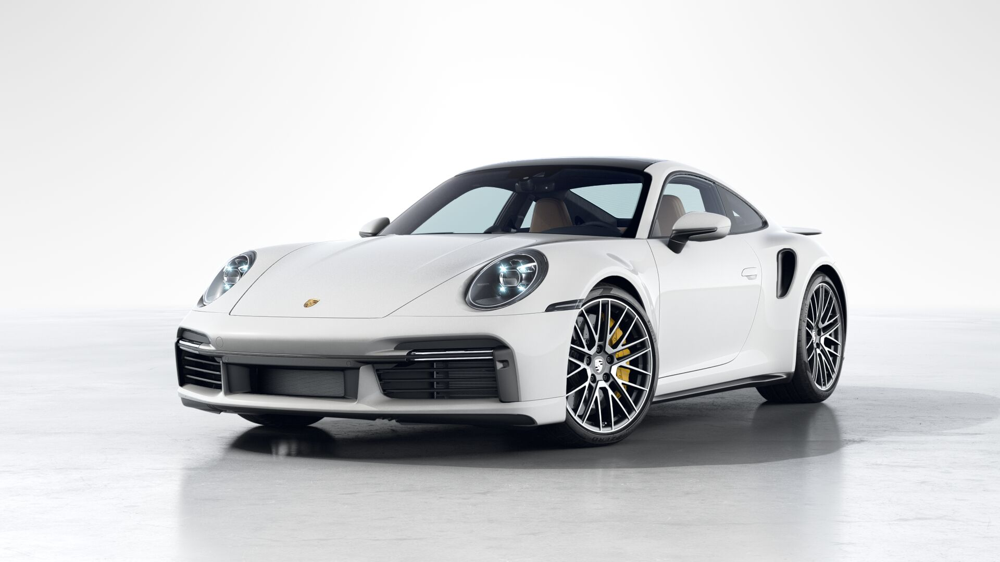

The Porsche
911 Turbo S (2024)
A Porsche 911 Turbo S se destaca como um carro de alto desempenho que combina potência, tecnologia e estilo marcante. Equipada com um motor flat-six twin-turbo e tração integral (AWD), oferece uma experiência de direção emocionante com aceleração impressionante e estabilidade excepcional. Além do desempenho extraordinário, a Turbo S apresenta um design distinto, tecnologia avançada e um interior luxuoso, proporcionando não apenas uma condução emocionante, mas também uma experiência premium que reflete a tradição e exclusividade associadas à marca Porsche.